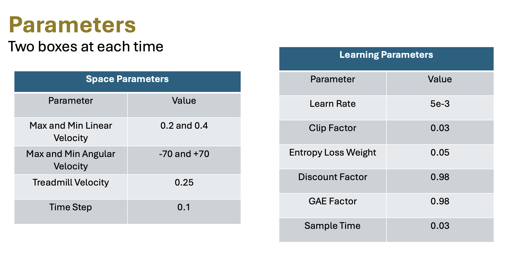
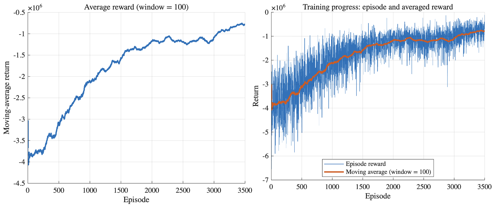
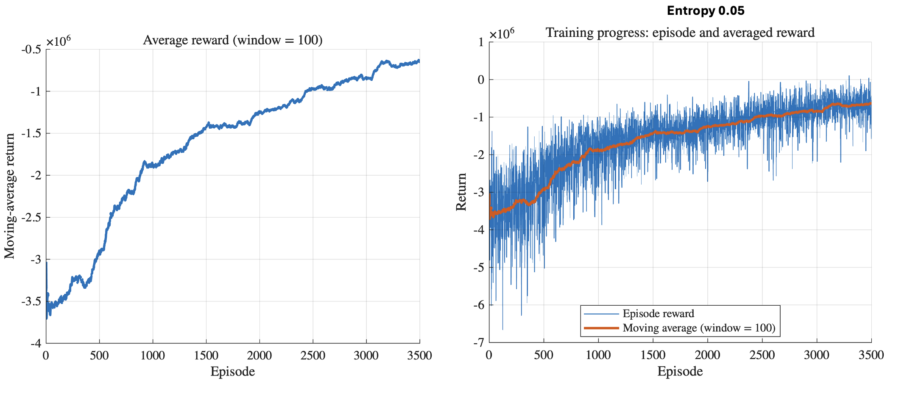
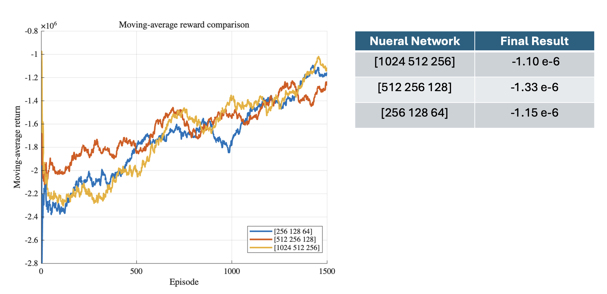
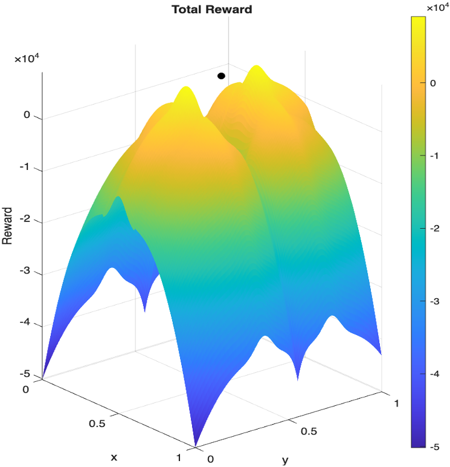

Custom PPO Environment for Multi-Box Coordination
This project focuses on a custom reinforcement-learning environment in which an agent coordinates two boxes at a time inside a structured workspace. The task combines motion decisions, spatial arrangement, and collision-aware behavior, while the policy is trained with PPO and evaluated through training curves, architecture comparison, and reward-surface analysis.
Project Overview
The aim of this project is to learn a control policy that manages multiple boxes in a constrained environment while improving organization quality and avoiding undesired configurations.
Objective
The agent observes the system configuration and selects actions that improve box alignment and separation while respecting the geometry of the workspace. The reward function encourages structured motion and penalizes poor placement, overlap, and ineffective coordination.
Why PPO
PPO was chosen because it offers stable policy updates, works well with continuous control, and allows systematic tuning through entropy, clipping, discounting, and network architecture choices.
Environment and Task Setup
The figure below illustrates the structured grid layout, box positions, and the motion interpretation used in the custom environment.
Custom Workspace Layout
The workspace is discretized into cells and used to model coordinated box handling. The environment includes spatial structure, directional motion, and conveyor-like behavior, making the policy learn both local action quality and global organization.
Parameters
These are the main space and learning parameters used in the experiments.

Environment and Learning Parameters
The setup defines motion bounds, time discretization, PPO hyperparameters, entropy regularization, and discounting choices. These values determine how aggressively the policy explores and how smoothly the training converges.
Training Progress
The next figures show how the episode reward and the moving-average reward evolve during training for different entropy settings.

Entropy Setting 0.03
This run shows a clear upward trend in the moving-average reward, indicating that the policy improves over time while still exhibiting the expected variability of reinforcement-learning training.

Entropy Setting 0.05
Increasing entropy encourages stronger exploration. In this case, the policy still converges while maintaining broader exploration during learning.
Results and Comparisons
The following figures summarize the network comparison and the reward structure used to guide the learning process.

Network Architecture Comparison
Different network sizes were tested to understand how model capacity affects policy quality. The figure compares moving-average reward trends and reports the final results for each architecture.

Reward Distribution
This plot provides geometric intuition about the reward landscape. It helps explain why some regions are attractive for the policy and why the learned behavior is shaped toward specific configurations.
Interpretation
Together, the training curves and architecture comparison show that the agent is not only learning but also responding meaningfully to hyperparameter and network design choices. The reward-surface figure complements these results by revealing the structure that the policy is implicitly optimizing over.
Video Demonstration
Add your experiment video here so visitors can see the learned behavior in action.
Simulation / Experiment Video
This video can be used to show how the trained policy moves the boxes over time and how the learned behavior compares with the intended reward design.
Discussion
This section explains the meaning of the results rather than only presenting the figures.
What the Results Show
The policy improves steadily through training and becomes increasingly capable of coordinating box motion according to the reward structure. The experiments also show that entropy tuning and network size affect both exploration and final performance.
Why the Project Matters
This project connects reinforcement learning to a structured engineering task involving spatial reasoning, control decisions, and performance-driven reward design. It highlights how learning-based policies can be engineered, evaluated, and improved through systematic experimentation.
Files and Links
You can keep direct links to the main project material here.